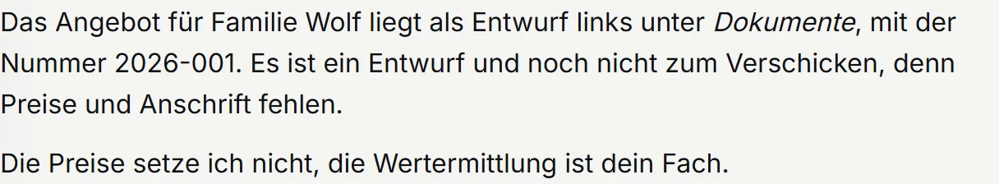
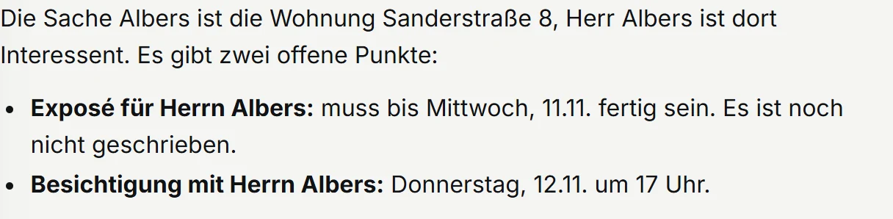
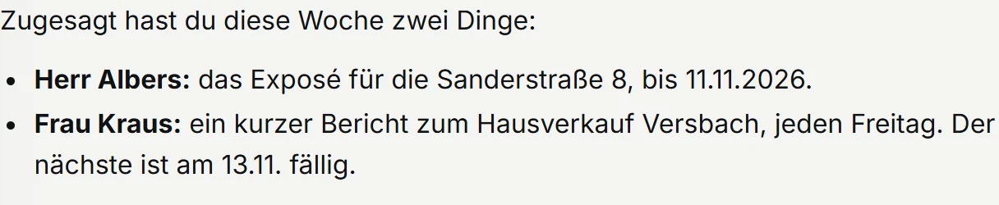
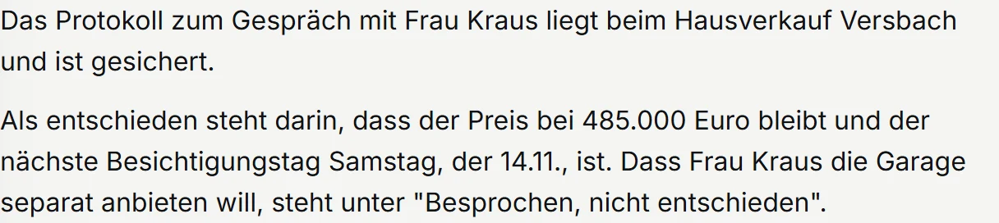

Für alle, die ihre Firma selbst tragen
Die Arbeit für Ihre Kunden machen Sie. Den Papierkram nicht mehr.
Am Rechner im Büro oder am Handy zwischen zwei Terminen: Sie schreiben ein paar Stichworte. Gernbei findet den Stand, schreibt den Entwurf und merkt sich, was Sie wem zugesagt haben. Abschicken tun Sie.
Läuft bei Amazon. Sie installieren nichts, kein Rechner nötig.
Gernbei für Dienstleister
am Rechner, Sonntagabend
Am Rechner im Büro,am Handy unterwegs. Dasselbe Gespräch.
Was Gernbei für Dienstleister kann. Tippen Sie an.
Erfundener Betrieb, echte Antwort.
Was Gernbei für Sie tut

AngebotGeben Sie ein altes Angebot als Vorlage, dann übernimmt Gernbei Ihren Aufbau. Was fehlt, sagt Gernbei, statt es zu erfinden.

StandEine Frage, und Gernbei nennt Stand und offene Punkte eines Kunden.

ZusagenJede Zusage steht mit Datum beim Kunden und morgens im Bericht.

ProtokollEntschiedenes und Offenes getrennt, abgelegt beim Kunden, auf Wunsch als Word-Datei.
Schreiben
Merken
Ihr Bereich
So starten Sie
Zwanzig Minuten, online oder bei einem Kaffee in Würzburg. Sie sehen, welchen Entwurf Gernbei aus Ihrer Mail macht. Unverbindlich.
Ich richte ihn persönlich ein, den Link bekommen Sie per Mail. Ihr Claude-Team bei Anthropic legen wir gemeinsam an.
Am Ende stehen Ihre ersten Kunden in Gernbei, und Ihr erstes Angebot liegt als Entwurf vor.
Hakt beim Einrichten etwas, helfe ich.
Was Gernbei nicht tut: Gernbei geht nicht ans Telefon, verschickt nichts, auch nicht aus Outlook, und veröffentlicht nichts. Hinaus geht nur, was Sie abschicken.
Der Preis
Den Preis nenne ich Ihnen im Gespräch, passend zu Ihrer Firma.
Dazu brauchen Sie ein eigenes Claude-Team bei Anthropic, dem Hersteller der KI.
Angebot nur für Unternehmer.
Hilft Ihnen jemand, etwa in der Buchhaltung? Diese Person bekommt einen eigenen Zugang zum selben Preis.
Wo Ihre Daten liegen
Ihre Unterlagen liegen bei Amazon in der EU, in Stockholm, in einem Bereich nur für Ihre Firma. Was Gernbei für eine Antwort liest, verarbeitet Anthropic auch in den USA; Amazon und Anthropic sind amerikanische Unternehmen.
Zwanzig Minuten, online oder bei einem Kaffee in Würzburg. Bringen Sie eine Kundenmail mit, dann sehen Sie, was Gernbei daraus macht. Passt es nicht, sage ich Ihnen das.
Oder direkt: hallo@gernbei.de · 0931 45321005 · Würzburg · remote & vor Ort